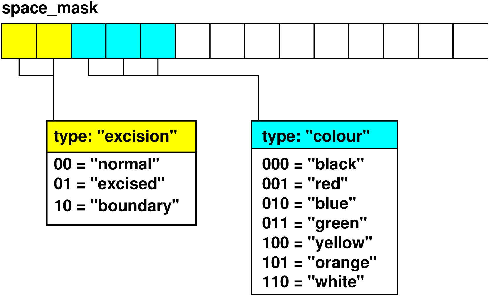

The SpaceMask thorn provides a grid function which can be used to store user-defined states at each grid point. Routines are provided for quickly setting and checking the mask states.
The mask is a grid function which can be used to assign a state to each point on the grid. It is used as a bit field, with different bits, or combinations of bits, assigned to represent various states. The mask is currently implemented as a CCTK_INT grid function, providing 32 bits per point.1 Appropriate numbers of bits within the mask can be allocated to represent individual states of a given type.
For instance, a programmer wants to record whether each point of the grid has state “interior”, “excised” or “boundary”. The collection of these states is called a type, and 2-bits of the mask (enough to represent the three possible states of the type) are allocated to hold this information. If an independent classification of points (ie. a new type) is required, bits are allocated to it from the remaining free bits in the mask. (See Figure 1.)
The SpaceMask thorn provides a set of routines for allocating bits within the mask, and for setting and checking the mask state at individual points.

A number of functions are provided for registering new types, and checking and setting mask values at a point. The interface to these functions differs slightly for C and Fortran90 code.
The following description describes the C interface for manipulating the mask. An example of code using these functions can be found in Appendix 5.1.
Bits of the mask are allocated to a new type using the function:
int SpaceMask_RegisterType(const char* type_name,
int nstates, const char* const state_list[])
The name of the new type to be registered;
The number of states in the new type;
A list of names, one for each state, or NULL.
An appropriate number of bits of the mask are allocated to hold a unique value for the \(n\) states specified by the nstates argument. The registration must take place before the type can be used, so for instance, this could be scheduled at CCTK_STARTUP. The function returns a \(-1\) if the required states cannot be allocated (for example, if there are not enough free bits remaining in the mask), otherwise it returns \(0\).
It is possible to allocate a portion of the mask without assigning names to any of the states by passing NULL as the state_list. This is useful when some integer number of states is required for a given type, but the number of states and appropriate names are not known at compile time. States which are allocated in this way can be accessed using the SpaceMask_GetStateBitsList().
New states can be added to an already allocated type using the function:
int SpaceMask_AppendStatesToType(const char* type_name,
int nstates, const char* const state_list[])
The name of an already registered type;
The number of states to be added;
A list of names, one for each of the new states.
A number of new bits will be added to the specified type appropriate to hold the number of existing states plus the extra states. The allocated bits need not be contiguous within the mask. The function returns \(0\) if successful, otherwise a \(-1\) if the new states could not be allocated.
The state of the mask at a given point is set using the function:
void SpaceMask_SetState(CCTK_INT* mask, int point,
const char* type_name, const char* state)
A pointer to the mask grid function;
The index of the point within the grid function array;
The name of the type containing the state;
The particular state to be set.
The state of the mask at a given point can be checked using:
int SpaceMask_CheckState(const CCTK_INT* mask, int point,
const char* type_name, const char* state)
A pointer to the mask grid function;
The index of the point within the grid function array;
The name of the type containing the state;
The particular state to be compared.
The return value is 1 if the given state_name has been set at the point, or 0 otherwise.
The above mentioned functions for checking and setting the mask are rather inefficient, since they require strings to be compared at each point. A set of faster macros are provided which operate on the mask by performing bit operations directly. In order to use these functions, the bitmasks corresponding to the desired type and it’s states need to be obtained using the following functions:
CCTK_INT SpaceMask_GetTypeBits(const char* type_name)
The type for which the bitmask is to be determined.
CCTK_INT SpaceMask_GetStateBits(const char* type_name, const char* state_name)
The type containing the state in question;
The state whose bitmask is to be determined.
Each of these functions returns a CCTK_INT8 which holds the bitmask corresponding to the given type or state. For example, if a given type uses three bits of the mask, the returned value could be the integer corresponding to the bitfield \(001110000\)…, where the location of \(1\)s indicates the bits which have been allocated to the given type. A return value of \(0\) (GetTypeBits) or \(-1\) (GetStateBits) indicates that the bitmask could not be determined for some reason (for example, the requested state was not previously registered).
All of the state masks allocated for a given type can be retrieved using the following function:
CCTK_INT* SpaceMask_GetStateBitsList(const char* type_name)
The type for which the bitmask is to be determined.
The return value is a list of integers, with a length corresponding to the number of states of the given type. Each of the entries is a bitmask which identifies the state. List entries are returned in the order in which they were originally assigned. This allows for a simple correspondence between states and integers (given by the index of the list entry). A fortran wrapper does not currently exist for this functionality.
The following macros have been defined for fast setting and checking of the mask by direct bitwise operations:
void SpaceMask_SetStateBits(CCTK_INT* mask, int point,
CCTK_INT type_bits, CCTK_INT state_bits)
A pointer to the mask grid function;
The index of the point within the grid function array;
The bitmask corresponding to the required type;
The bitmask corrsponding to the required state;
int SpaceMask_CheckStateBits(const CCTK_INT* mask, int point,
CCTK_INT type_bits, CCTK_INT state_bits)
A pointer to the mask grid function;
The index of the point within the grid function array;
The bitmask corresponding to the required type;
The bitmask corrsponding to the required state;
The latter macro returns a 1 if the given state has been set, a 0 otherwise. The type_bits and state_bits can be obtained using the SpaceMask_Get*Bits functions, described above.
The following Fortran interfaces to the mask utilities apply only to Fortran90 code, since fast bitwise operations are not a part of the Fortran77 standard. An example of the use of the Fortran90 interface can be found in Appendix 5.2.
Registration functions have not been implemented for the Fortran90 interface, though they can easily be written in C by following the descriptions in Section 2.1.1 and the example in Appendix 5.1.
The mask states can be manipulated using the following functions:
SpaceMask_SetState(CCTK_INT mask(,,), int point, character type_name,
character state_name)
A pointer to the mask grid function;
The index of the point within the grid function array;
The name of the type containing the state; type;
The name of the state to be set.
The value of the mask variable is changed to turn on the specified state at the point.
SpaceMask_CheckState(CCTK_INT check, CCTK_INT mask(,,), int point,
character type_name, character state_name)
A variable which is set to 1 if the requested state has been set;
A pointer to the mask grid function;
The index of the point within the grid function array;
The name of the type containing the state; type;
The name of the state to be checked.
As in the C interface, alternative bitwise operators have been defined in order to more quickly operate on the mask at a point. In order to use these functions, the bitmasks corresponding to the type and states in question must first be obtained using the following functions:
SpaceMask_GetTypeBits(CCTK_INT type_bits, character type_name)
A variable which will be set to the bitmask of the requested type;
A character string naming the type.
SpaceMask_GetStateBits(CCTK_INT state_bits, character type_name,
character state_name)
A variable which will be set to the bitmask of the requested state;
A character string naming the type containing the state;
A character string naming the state.
Once the bitmasks for the type and state have been obtained, the following macros can be used directly:
SpaceMask_SetStateBitsF90(mask, i, j, k, type_bits, state_bits)
This macro sets the value of the mask at the index \((i,j,k)\) to the given state. It doesn’t have a return value, and can be used directly inline (without a Fortran ‘call’).
SpaceMask_CheckStateBitsF90(mask, i, j, k, type_bits, state_bits)
A value of ‘.true.’ is returned if the given state has been set, or ‘.false.’ otherwise. The macro can be used directly in Fortran boolean expressions, as in the examples in Appendix 5.2.
A proposal exists to provide a more versatile solution by allowing tables to be associated with each grid point. This could be implemented using the existing standard outlined here through the addition of an additional integer grid function
space_table_field
A bit of the existing space_mask would be allocated to indicate whether or not a table has been associated with the given point. If so, then the corresponding point in the space_table_field would hold the table handle.
Thanks to Jonathan Thornburg, Tom Goodale, and Erik Schnetter for helpful comments on the original specification. Useful implementation of the mask required grid symmetries to work for integer grid functions. This was done by Thomas Radke. Peter Diener helped with the coding of the Fortran90 bitwise operators.
#include "cctk.h"
#include "cctk_Arguments.h"
#include "cctk_Parameters.h"
#include "SpaceMask.h"
/*
* Register a mask type with three states.
*/
void Eg_RegisterMask (void)
{
char *state_list_excision[3] = {"normal", "excise", "boundary"};
SpaceMask_RegisterType("excision", 3, state_list_excision);
return;
}
/*
* Set the mask to the ‘‘normal’’ state at each point using the
* slower name-reference function. See below for an example using
* the faster bitwise operator to check the mask states.
*/
void Eg_SetMaskStates (CCTK_ARGUMENTS)
{
DECLARE_CCTK_ARGUMENTS
DECLARE_CCTK_PARAMETERS
int i, j, k, ijk;
for (k=0; k<cctk_lsh[2]; ++k)
{
for (j=0; j<cctk_lsh[1]; ++j)
{
for (i=0; i<cctk_lsh[0]; ++i)
{
ijk = CCTK_GFINDEX3D(cctkGH, i, j, k);
SpaceMask_SetState(space_mask, ijk, "excision", "normal");
}
}
}
return;
}
/*
* Check which of the points of the mask have been set to the
* ‘‘boundary’’ state using the bitwise macro.
*/
void Eg_CheckMaskStates (CCTK_ARGUMENTS)
{
DECLARE_CCTK_ARGUMENTS
DECLARE_CCTK_PARAMETERS
int i, j, k, ijk;
CCTK_INT excision_mask;
CCTK_INT boundary_mask;
excision_mask = SpaceMask_GetTypeBits("excision");
boundary_mask = SpaceMask_GetStateBits("boundary");
for (k=0; k<cctk_lsh[2]; ++k)
{
for (j=0; j<cctk_lsh[1]; ++j)
{
for (i=0; i<cctk_lsh[0]; ++i)
{
ijk = CCTK_GFINDEX3D(cctkGH, i, j, k);
if (SpaceMask_CheckStateBits(space_mask, ijk, excision_mask,
boundary_mask))
{
CCTK_VINFO(CCTK_THORNSTRING,
"Point (%d,%d,%d) is a boundary point.\n",
i, j, k);
}
}
}
}
return;
}
#include "cctk.h"
#include "cctk_Arguments.h"
#include "cctk_Parameters.h"
#include "SpaceMask.h"
!
! Sets each point of the mask to the ’normal’ state. Here, ’normal’
! is one of the states of the ’excision’ type, which should have
! been registered previously using the C SpaceMask_RegisterType()
! function.
!
subroutine Eg_SetStateByName(CCTK_ARGUMENTS)
implicit none
integer ni, nj, nk
integer i, j, k, ijk
ni = cctk_lsh(1)
nj = cctk_lsh(2)
nk = cctk_lsh(3)
do k=1,nk
do j=1,nj
do i=1,ni
ijk = (i-1) + ni*((j-1) + nj*(k-1))
call SpaceMask_SetState(space_mask, ijk, "excision", "normal")
end do
end do
end do
end subroutine Eg_SetStateByName
!
! Sets the mask values within a radius of 1 to the ’excise’ state,
! then does a check of the state of each point. The bitwise macros
! are used in this case for greater efficiency in setting/checking
! the mask.
!
subroutine Eg_SetExcisedRegionByBitmask(CCTK_ARGUMENTS)
implicit none
integer ni, nj, nk
integer i, j, k, ijk
CCTK_INT type_bits, excised
ni = cctk_lsh(1)
nj = cctk_lsh(2)
nk = cctk_lsh(3)
call SpaceMask_GetTypeBits(type_bits, "excision")
call SpaceMask_GetStateBits(excised, "excision", "excised")
do k=1,nk
do j=1,nj
do i=1,ni
if (r(i,j,k).lt.1.d0) then
SpaceMask_SetStateBitsF90(space_mask, i, j, k, type_bits, &
excised)
end if
end do
end do
end do
do k=1,nk
do j=1,nj
do i=1,ni
if (SpaceMask_CheckStateBitsF90(space_mask, i, j, k, type_bits, &
excised)) then
write(*,*) "The point (", i, j, k, ") has been excised."
end if
end do
end do
end do
end subroutine Eg_SetExcisedRegionByBitmask
| use_mask | Scope: restricted | BOOLEAN |
| Description: Turn on storage for mask?
| ||
| Default: no | ||
Implements:
spacemask
Inherits:
grid
| Group Names | Variable Names | Details | |
| space_mask_group | compact | 0 | |
| space_mask | dimensions | 3 | |
| distribution | DEFAULT | ||
| group type | GF | ||
| tags | tensortypealias=”Scalar” Prolongation=”None” | ||
| timelevels | 1 | ||
| variable type | INT | ||
| mask | compact | 0 | |
| emask | description | Mask | |
| dimensions | 3 | ||
| distribution | DEFAULT | ||
| group type | GF | ||
| tags | tensortypealias=”Scalar” Prolongation=”None” | ||
| timelevels | 1 | ||
| variable type | REAL | ||
Adds header:
SpaceMask.h
Uses header:
Symmetry.h
This section lists all the variables which are assigned storage by thorn CactusNumerical/SpaceMask. Storage can either last for the duration of the run (Always means that if this thorn is activated storage will be assigned, Conditional means that if this thorn is activated storage will be assigned for the duration of the run if some condition is met), or can be turned on for the duration of a schedule function.
| Conditional: | |
| space_mask_group | |
| mask | |
CCTK_BASEGRID (conditional)
maskzero
initialise mask to zero
| Language: | c | |
| Type: | function | |
| Writes: | spacemask::space_mask(everywhere) | |
CCTK_WRAGH (conditional)
masksym
set grid symmetries for mask
| Language: | c | |
| Options: | global | |
| Type: | function | |
CCTK_POSTREGRIDINITIAL (conditional)
maskzero
initialise mask to zero
| Language: | c | |
| Type: | function | |
| Writes: | spacemask::space_mask(everywhere) | |
CCTK_POSTREGRID (conditional)
maskzero
initialise mask to zero
| Language: | c | |
| Type: | function | |
| Writes: | spacemask::space_mask(everywhere) | |
CCTK_WRAGH (conditional)
masksym_emask
set grid symmetries for emask (compatibility mode)
| Language: | c | |
| Options: | global | |
| Type: | function | |
CCTK_BASEGRID (conditional)
maskone
set old style mask to one
| Language: | c | |
| Type: | function | |
| Writes: | spacemask::emask(everywhere) | |
CCTK_POSTSTEP (conditional)
checkmask
ensure that all mask values are legal
| Language: | c | |
| Reads: | spacemask::emask(everywhere) | |
| Type: | function | |
CCTK_POSTREGRIDINITIAL (conditional)
maskone
set mask to one
| Language: | c | |
| Type: | function | |
| Writes: | spacemask::emask(everywhere) | |
CCTK_POSTREGRID (conditional)
maskone
set mask to one
| Language: | c | |
| Type: | function | |
| Writes: | spacemask::emask(everywhere) | |